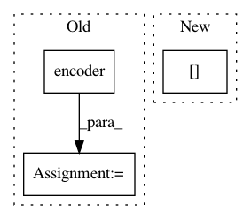

c8523b2dc735a1b82ca6170e6ca349defe9f77fc,examples/transformer.py,,,#,22
Before Change
src, tgt = sess.run([src_text, tgt_text])
print("src:{}".format(src))
print("tgt:{}".format(tgt))
encoder_output = encoder(src_text["text_ids"][:, :-1],
sequence_length=src_text["length"]-1)
// Decode
outputs, final_state, sequence_lengths = decoder(
initial_state=connector(text_database._hparams.batch_size))
After Change
src_text = text_data_batch["source_text_ids"]
tgt_text = text_data_batch["target_text_ids"]
decoder_inputs = tf.concat((tf.ones_like(tgt_text[:, :1]), tgt_text[:, :-1]), -1)
print("src_text:{}".format(src_text))
encoder_output = encoder(src_text,
In pattern: SUPERPATTERN
Frequency: 3
Non-data size: 3
Instances
Project Name: asyml/texar
Commit Name: c8523b2dc735a1b82ca6170e6ca349defe9f77fc
Time: 2017-11-17
Author: shore@pku.edu.cn
File Name: examples/transformer.py
Class Name:
Method Name:
Project Name: OpenNMT/OpenNMT-py
Commit Name: 522104535e9b0ab4ca4ea8213f4034e1802412f4
Time: 2018-11-02
Author: vince62s@yahoo.com
File Name: onmt/models/model.py
Class Name: NMTModel
Method Name: forward
Project Name: uber/ludwig
Commit Name: a0a14ed743f511932db8234b2521a9eebfecde31
Time: 2020-07-09
Author: w4nderlust@gmail.com
File Name: tests/ludwig/models/modules/test_encoder.py
Class Name:
Method Name: encoder_test